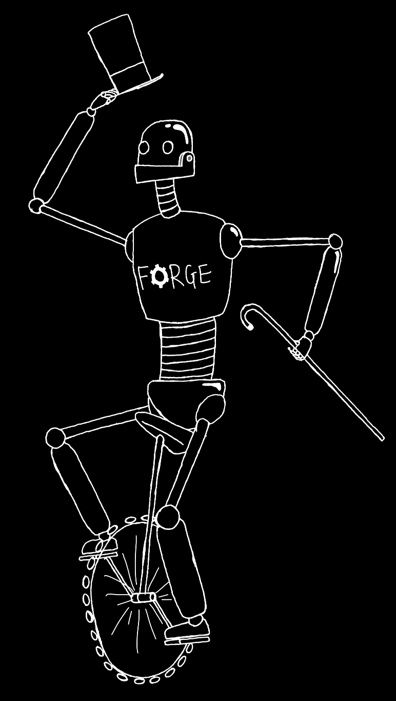

I love hardware, AI and leading teams to build projects. I bring a process-centric mindset to all my work. I am currently a Senior at Stanford finishing my EE Bachelor's (Hardware & Software specialisation) in June 2021 and will take an extra quarter to finish my CS coterminal Master's (AI specialisation; currently applying) in December 2021.
Philip Mateo Pfeffer
UNDER CONSTRUCTION: I'm writing up more each day!
MY ORGANISATIONS
The Creator's Community (April 2020 - Present)
Product Hub of Stanford Students
We are creating Stanford’s go-to place for future founders to make building side-projects into a relentless, achievable habit. I founded and am growing the community. Our first ‘Gap Month’ of three themed houses - 15 total future founders - has just wrapped. Currently, we're interviewing the next cohort of aspiring founders (please get in touch!) for admission to the second Gap Month.
Read more...
FLEX Quarter (July 2020 - Present)
I run an intensive weekly workout group for friends, FLEX Quarter. We're so official, we even have a site: flexquarter.co.uk!
Take me to the site!
FORGE Robotics (2017-2018)
I founded this organisation in secondary school (that's high school for the americans) to make robotics accessible to UK primary school children. I recruited students from my school's robotics team (read about Westminster FIRST Robotics) to mentor the primary school teams, allowing the older students to practice their leadership and organisation while giving back to the community.
Read more...

Westminster FIRST Robotics: FORGE (2015-2017)
I founded this in 2015 to inspire other students to work together to build towards a common goal, to learn about robotics, and to bring Westminster into the 21st century.

MY PROJECTS
Haptic Vest (September 2020 - Present)
Category
AI on edge hardware
What is it?
Imagine being visually impaired but still able to feel the movement of surrounding crowds and cars on your body. Imagine being a peacekeeper but resting assured that unexpected movements behind you will be transduced into your shirt. Imagine being a twenty year-old playing Pokémon Go and receiving a haptic vibration pointing you towards your next catch. This can be achieved by wearing a 'haptic vest' that uses a camera to capture images, a computer vision model to process them and coin-sized vibration motors that vibrate the shirt to communicate the output.
Why this project?
I wanted to learn about AI computer vision on the edge. This application allows me to learn about and experiment with AI on hardware while building a full end-to-end project. I have been trying out ideas to make computer vision better on edge devices without needing to build a full self-driving car. I love the idea of an AI + AR driven world, like that presented in Daemon and FreedomTM by Daniel Suarez.
Read more...
FastAI Projects
Almanac: The Marauder's Guide
PicMe
DUTothy
A fellow EE student and I worked together to build up digital systems on an FPGA using Verilog. This culminated in a final project where my teammate and I created a basic hardware logic-based version of the popular Ableton Push, an instrument/music synthesiser. We worked tirelessly to implement three main features were: a looping backbeat that you could design and change on the spot, an accelerometer programmed to act like the obscure instrument known as a Theremin, and a live waveform display to visualise music in the style of this Arctic Monkeys music video. Combined with the ability to change the music to sound like four different instruments by manipulating the waveforms, as well as the accelerometer's double function as a Minority Report-esque control, it was a fulfilling and challenging two-week project.
Bio-Inspired Algorithms (SWARM & Genetic)
Boggo The Doggo
Pfelizidad
CS107E was similarly project-based. I programmed my own operating system on a bare-metal Raspberry Pi in eight weeks and for the final project created a live music interpretation software that would display sheet music, listen to you play music live on a piano, and show you which notes you hit and which you missed. Another tough and fascinating project!